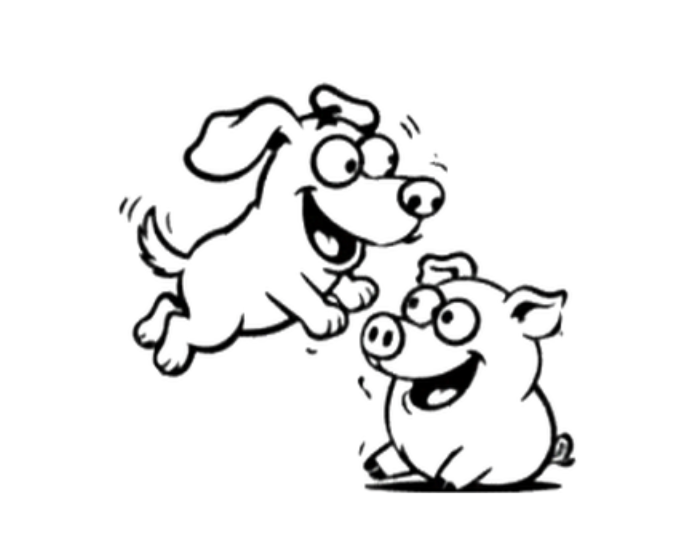
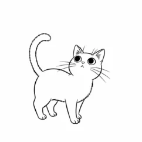

豚のエピソード：犬以上の学習力を持つ認知能力
豚が示す驚くべき学習能力と問題解決スキル。犬との認知能力比較から見える実力の秘密。
動物の頭脳
豚

豚が持つ複雑な思考回路と学習能力について、最新の神経科学研究から解説。

紫外線も見える鶏の目。その独特な色彩認識が、行動にどう影響するのか。

ポジティブな時とネガティブな時で変わる犬の尻尾の振り方を行動学で紐解く。

砂浴びの3つの役割を研究と飼育経験からわかりやすく解説。

それぞれ違う種類の「凄さ」を持っている

犬と鶏のそれぞれの感覚能力を比較し、進化の歴史から解明。

子豚は生まれて数秒〜数分で、もう「順位争い」を始めている

猫のゴロゴロ音がもたらす健康効果について解説

猫のヒゲには世界中で幸運や魔除けの力があると信じられてきた歴史があります。
猫のしっぽが持つボディランゲージの意味を、7日間の観察記録とともに解説。

フェロモンとにおい腺の仕組みから、豚のナージングとの共通点まで解説。
ネコのヒゲは3Dスキャナー、ブタのヒゲは世界最強のサーチエンジン。
犬の「社会的参照」、豚のビデオゲーム実験。動物の知性の真実に迫ります。
飼育のプロが毎朝行う元気度チェックの極意と、鶏の驚きの知性を解説。
ブタ・イヌとの比較で判明した、猫が水に「塩対応」な進化の秘密。
保温・擬態・匂いのステルスまで、鶏の羽が持つ多機能を研究データで解説。
AIが7,000以上の鳴き声を分析してわかった、豚の驚くべきコミュニケーション能力。
最新の科学研究が明かす鶏、豚、犬の驚くべき知能と認知能力。
犬の散歩 驚くべき事実
犬の耳が語る 驚くべきサイン
聴覚の仕組みと健康サインを研究データで解説
豚と犬の嗅覚 を研究データで解説
猫と豚の聴力を研究データで解説
猫の爪とぎを研究データで解説
猫の爪とぎを研究データで解説
猫の夜間視力を研究データで解説
豚の鳴き声の意味を研究データで解説
犬のしつけを研究データで解説
豚の人の声や身振りへの理解を研究データで解説
犬の食べ物を研究データで解説
猫の食事の科学を研究データで解説
犬の換毛を研究データで解説
ネコのヒゲを研究データで解説
鶏の視覚を研究データで解説
犬の感じる仕組みを研究データで解説
猫の肉球を研究データで解説
猫の理想体重を研究データで解説
Chicken Eyesight Secretsを研究データで解説
Chicken Eyesight Secretsを研究データで解説

猫のFluffy Friendsを研究データで解説
鶏に羽があるのかを研究データで解説
豚の鳴き声を研究データで解説
猫は「気まぐれ」「懐かない」と言われがちですが、実は人間の赤ちゃんや犬と同じように、飼い主との間に深い愛着関係を築いていることが研究でわかってきました。
「250人説」の真偽と驚くべき認知能力を研究データで解説
「犬はのしっぽ」どういう意味？——この事実を研究データで解説
鶏の体内時計と概日リズムの科学と、鶏の驚きを解説。
豚が泥に入る理由 驚きを解説。
豚は尻尾の角度や耳の向き、鳴き声で気持ちや体調のSOSを発信している。20年の飼育経験と国内外の研究データをもとに、見逃せない7つのサインをイラストと図解でわかりやすく解説します。
犬の脱毛シーズンについて詳しく解説
猫と豚、24時間のうちどれくらい夢を見ているの？
鶏はどのようにして仲間を保護するのか？